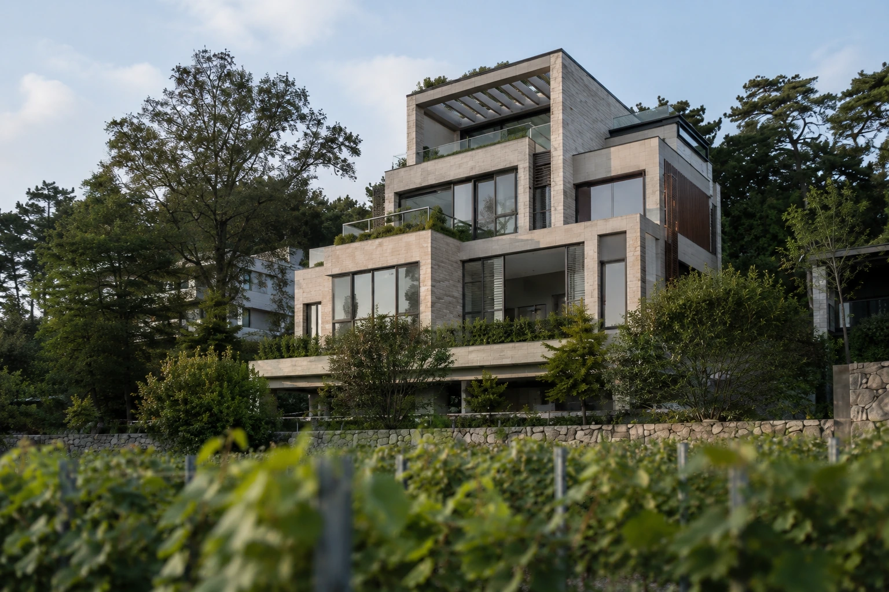
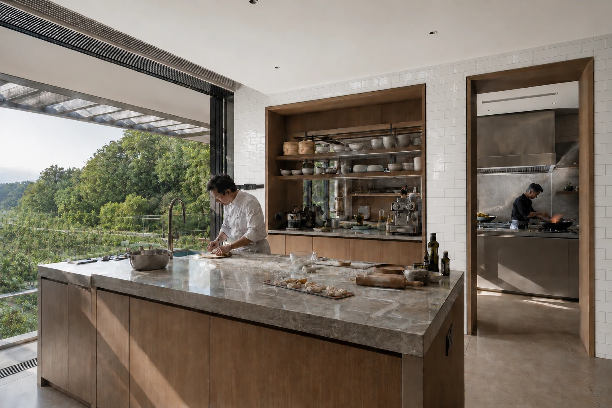
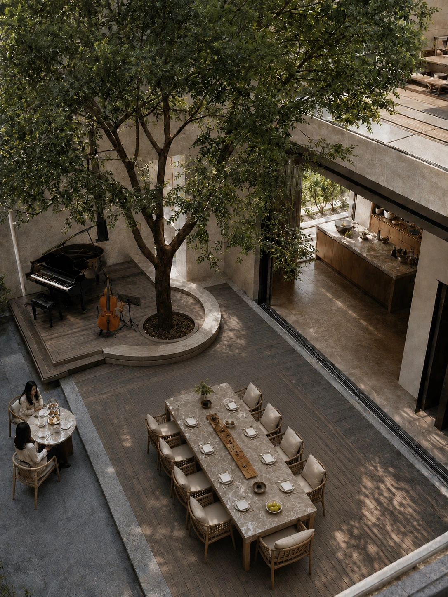
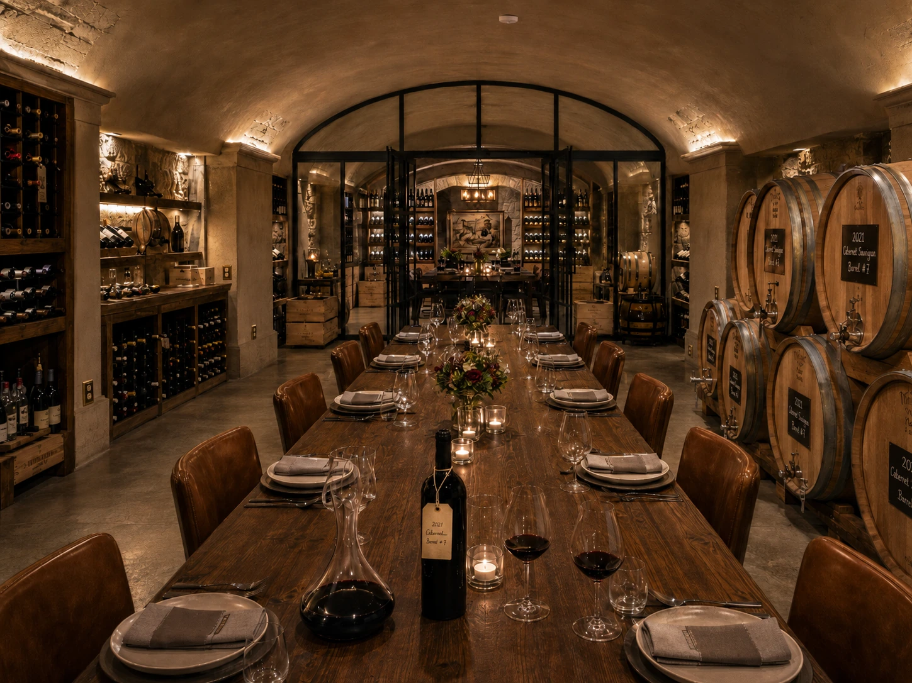
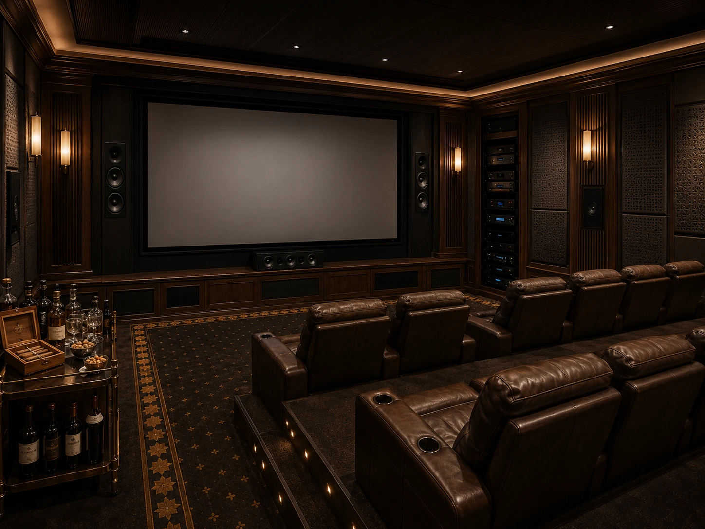
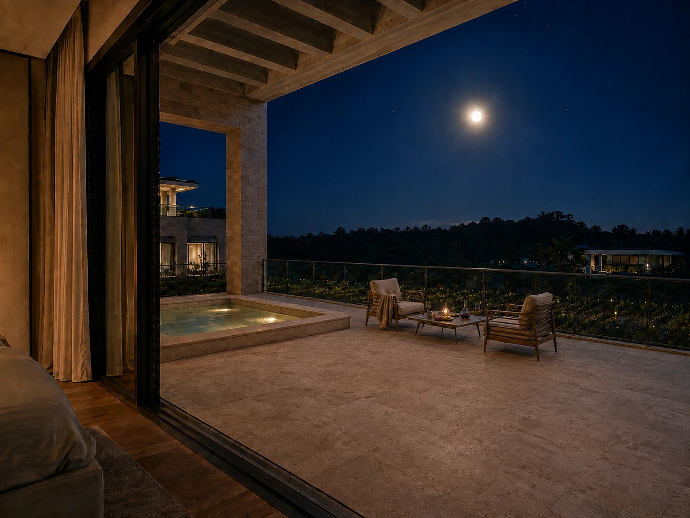

VINEYARD
HOUSE
葡萄园宅邸Biệt thự vườn nho
这栋住宅不再以“艺术展陈”作为主角，而由主人一天的生活节奏组织：清晨经过葡萄园，午间进入厨房，下午在树下餐叙与演奏，夜晚回到地下酒窖与私人影院，最后在卧室露台结束一天。葡萄酒、音乐与餐桌不是装饰主题，而成为建筑真正的使用逻辑。
A house shaped by wine, music and the rituals of gathering. Morning begins in the vineyard; cooking takes over at noon; the courtyard becomes a table and a stage in the afternoon; the cellar and cinema belong to the night; a final glass of wine returns life to the private terrace.
Ngôi nhà được tổ chức bởi rượu vang, âm nhạc và những nghi thức sum họp. Buổi sáng bắt đầu ở vườn nho, buổi trưa là gian bếp, buổi chiều là bàn ăn và sân khấu dưới tán cây; hầm rượu và rạp chiếu phim thuộc về đêm, trước khi ngày khép lại bằng một ly vang trên sân hiên phòng ngủ.
葡萄园
厨房
庭院餐叙
酒窖
影院
露台
THE HOUSE
BEGINS OUTSIDE.
建筑位于坡上，葡萄园铺展在前方较低的平地。清晨首先看到的不是一块被装饰的花园，而是一处真正参与生活的微型葡萄园。建筑成为背景，葡萄藤成为每天进入住宅生活的第一层前景。
COOKING
IS PART OF THE VIEW.
三层厨房由西厨烘焙区与独立中厨共同工作。开放面向坡下葡萄园，食材、烘焙与大火快炒被放在同一套真实生活系统里，而不是被隐藏在样板间式的展示界面之后。

TABLE,
TREE & MUSIC.
庭院是整栋住宅最明确的公共生活场景。大树、长餐桌、茶席与表演平台在同一个室外房间里发生关系；钢琴与大提琴不是摆设，而是主人招待朋友时自然出现的生活内容。

FROM CELLAR
TO THE TABLE.
地下空间既是收藏酒窖，也是小型私人酿酒与晚餐空间。橡木桶、年份与批次记录、醒酒器和手写瓶颈标签保持真正酿酒生活的逻辑；长桌让品酒最终回到人与人的相聚。

A ROOM
FOR THE LAST ACT.
深夜的公共活动从餐桌转移到专业私人影院。抗光硬屏、完整前声场、设备机柜、两排座椅与抬高后的第二排共同保证真实可用性；酒车、红酒与雪茄延续前一个空间的生活气息。

ONE LAST GLASS
UNDER THE MOON.
客人离开后，动线回到主卧与大露台。按摩池、靠近栏杆的小酌座椅、已经打开的酒与月光下的葡萄园，形成一天最后的私人片段。远处邻居仍然存在，但被压低到真实而克制的背景。

WINE, MUSIC AND THE TABLE
SHAPE A DAY AT HOME.